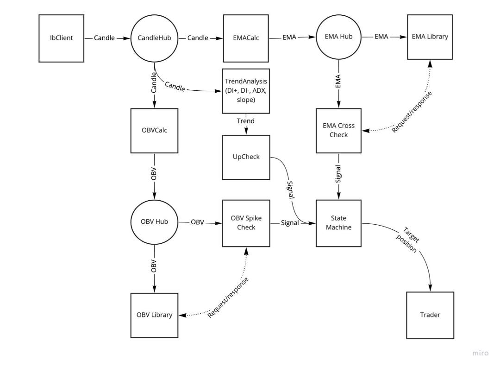

09 Sep 2021
I recently started a contract to build a high-frequency trading bot. I’ll use this to document the experience, engineering workflow, daily work, exciting breakthroughs, difficult problems, etc.

Proposed software architecture
Somebody saw I had some hobby Haskell experience, so he contacted me about building a high-frequency securities trading bot in a functional language. He currently has an implementation in python that he built with a small team over the last 2 - 3 years. It’s a well-built code base, but ran into speed issues, so couldn’t compete in the markets. He said they’ve tried to speed up the processes using asyncIO and PyPy, but that it hasn’t been fruitful. The idea is to build it with a functional language because they better handle concurrency, and are just generally much faster compiled languages.
I’ve never done this before. I’ve never had to work with threads, concurrency, etc., let alone a functional project of this size. I told him all of this, and he understands what I know, but we came to a mutual understanding of expectations and mutual confidence that we can get this done. This is a huge challenge, I’ll learn a lot, and am getting paid to do it. I’ll be responsible for a highly technical engineering project. I’m super excited and grateful, and definitely a little nervous.
He has the domain expertise, experience from building something like this before, and the runway to fail smartly along the way. He’s also extremely energetic and passionate about the project.
He wanted me to evaluate lots of languages. He’s not a functional programmer, but has read a lot about HFT and understands the project requirements and important metrics for evaluation. His requirements are that it’s in a fast, functional language (for concurrency). People also write safe, concurrent programs in Go, which isn’t functional, but I don’t know anything about Go, and he wants something functional, so we ruled out Go. Other languages include OCaml, Haskell, Erlang, Scala, Racket. His vision is to have a system written in lots of different functional languages, and become an oasis for functional programmers. Let’s start with one! I won’t go into details now, but we decided on Scala. I’ve used it a bit, it’s quicker to get something prototyped (because it’s less strict about side effects compared to Haskell), and has a big community. The idea is to build an MVP, understand some of the functional patterns needed, learn the domain, learn about concurrency. If we decide this language isn’t right after some time, well have learned a lot and will be able to port it to another functional language fairly quickly (in theory).
A high level overview, as my understanding now, is to read in real-time and historical market data about one or more contracts, then do some analysis that will trigger a buy or sell event, or to take no action. The core of HFT is in the analysis and minimizing latency. Because analysis complexity and latency are at odds with each other on the axis of time, the art of HFT is finding the sweet spot along the axis of analysis and latency.
The Trader Workstation API is an interface to programmatically work on the markets. It has native Python support, which made it easy for their current code base to interface. It also has a Java API, but I didn’t want to deal with Java code, and found an open source Scala wrapper, IBClient. It’s not documented, but matches the native API fairly closely.
The Python code base relied on TA-Lib for analysis. There are a few similar tools in Java, but haven’t found a Scala version, or a Scala wrapper.
Interactive Brokers, or IB, allows access to something called a ‘paper’ account where you can make trades with fake money. This will be used for testing.
I’m defining the MVP to have the following features: - connect as a client to Interactive Brokers - create a contract - receive historical data for the contract - make a (dumb) buy decision - buy a security - make a (dumb) sell decision - sell a product
This will just be a show that the APIs are working and can be plumbed together. I’ll test this by viewing a change of dollar amount in the GUI for the paper account.
I started with this project before I started writing this post, and up til now, I’ve been very sloppy with code and git. There have been many false starts as I deal with testing unsupported, open source IB client libraries. I’ve settled on a IB client wrapper, and have tested part of the API, so am confident that I can get something working with Scala now without having to use the native Java TWS API. I’m now at a place where I’ll use better SWE practices. I’ll keep a more detailed to-do list in the project git repo, but here I’ll overview status of features and bugs. I’ll start writing tests and practice some TDD after I’ve delivered the MVP.
Currently, I have:
Next steps:
When the markets are down I can’t fully test my code. So I decided improve my workflow today instead. My dev environment quickly got out of hand and I was requiring too many terminal windows. I’ve used tmux before but it’s not second nature. I decided to use it to manage my workflow better. I created tmux startup script to streamline the process, and it’s already really paying off. Would highly recommend!
While it’s still the weekend and markets are down, I figured I’d spend time trying to find a Scala wrapper for ta-lib, or some other analysis library. This isn’t part of the plumbing MVP spec, but some kind of analysis is necessary for a full blown MVP.
Buy and sell orders are showing up in the TWS GUI, so I know it’s partially working, but weren’t ‘transmitting’ because the order didn’t have an account allocated (the GUI was informing me about this issue). I didn’t know if this was a setting in the TWS GUI, or if it was exposed in the API. It turns out the Java native IB API allows orders to have an account, but the Scala wrapper I’m using didn’t expose that part of the Java API. Here’s the pull request.
The plumbing API is finished. Now Trading MVP.